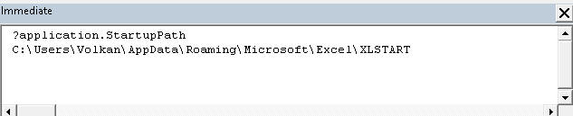
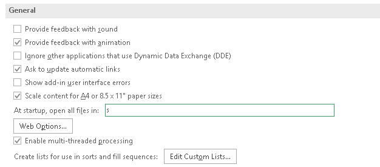
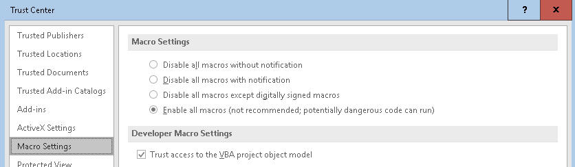
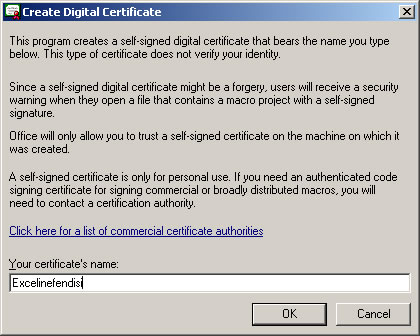
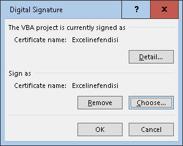
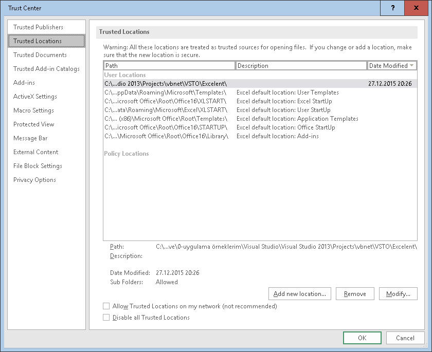

Makro mu VBA mi?
Eve bu ana bölümde özetle "makro yazmayı öğreneceksiniz" diyebiliriz ancak Makro ile eş anlamlı kullanılan bir ifade de VBA'dir. VBA, Visual Basic(VB) Programlama dilinin
Office programları için uyarlanmış bir versiyonudur.
Excel makrolarını yazacağımız dil de VBA(Visual Basic Applications) for
Excel olarak bilinir, yani Excel için Visual Basic uygulamaları.(Access,
Outlook ve PowerPoint için de VBA mevcuttur ancak en popüleri Excel için
olanıdır)
Makro terimi yanlızca Office programlarına özgü bir ifade değildir aslında,
birçok programda Makro özelliği bulunabilir. Özünde makro, adımlardan oluşan
bir program bütündür. Excel için söyleyecek olursak, bir hücreyi seçmek,
içine bir değer girmek, bi sayfayı silmek gibi.
Makroları yazarken VBA kullanacağımız için de genel olarak Makro ve VBA
ifadeleri birbirinin yerine kullanılabilir ama şunu söyleyebilirm ki VBA
ifadesini kullanmak sizi biraz daha profesyonel gösterir :)
Ne işe yarar?
Basitçe Excelin zaten güçlü olan işlevselliğini daha da ileri götürmek gibi
bir temel görevi olduğunu söyleyebileceğimiz Makroların, belli başlı
kullanım amaçları sonraki paragrafta verilmiştir, tabiki bunlar
çoğaltılabilir.
Bunlara geçmeden önce söylemeden geçemeyeceğim bir husus var. Makroların
gücünü tam olarak bilmeyenlerin/görmeyenlerin genelde Exceli ve VBA'i/Makroları küçümseme
gibi bir huyu vardır. Onlara göre bırakın VBA'yı, VB bile doğru dürüst bir
programlama dili değildir. Evet, VB'den daha gelişmiş dillerin olduğu doğru
ancak, elimizdeki tool Excel ise Excelin işlevselliğini de ileriye götüren
en güçlü ve kolay ulaşılabilir tool da VBA'dir.(Başka dillerle de, VB.Net,
C#, C++ ile de Interop dll'leri aracılığı ile Excel otomasyonu sağlanabilir,
ki bunlardan VB.Net ile neler yapılabileceğini VSTO ana menüsünde ayrıca ele
alıyorum). Her ne olursa olsun, VBA ile yapılabileceklerin de bir sınırı var,
ki bence bu sınırlar oldukça geniştir, ancak kimsenin VBA ile bir masaüstü
program yazma veya Facebook gibi bir site yapma iddiası da yok. Bir diğer
uçta ise, öğrenmeye açık olmadığı için makrolarla neler yapılabileceğini
hayal bile edemeyen kişiler var, ve bunlar da makroların gücünü
önemsemezler. Ana sayfada ne demiştim, "Excel düşündüğünüzden değil düşünebileceğinizden
bile daha karmaşık bir yapıya sahiptir". Neyse, bu iki uç grubu biz de görmezden gelelim, olumluya odaklanalım ve
makrolarla hem kendimizi hem de bu iki grup dışındaki çoğunluğu oluşturan
insanları nasıl büyüleyeceğimize bi bakalım:
- Rutin yapılan işler başta olmak üzere birçok işin otomatiğe
alınması(Böylece hatasız ve aşırı hızlı işlem yaparsınız)
- Excelin kendisiyle yapılamayan veya yapılsa bile aylar yıllar sürecek döngüsel işlemler gibi işlemlerin
yapılması(Ör:1000 satırın herbirine ayrı ayrı goal seek yapmak gibi)
- Bazı durumlarda yetersiz kalan Excel fonksiyonlarının yerine kendi
fonksiyonlarınızı yazabilirsiniz
- Makrolar işyükünüzü azaltır, siz yokken bile çalışabilir. Kurumunuza
verimlilik sağlar, maliyetleri düşürür.
- Bazı durumlarda insanların size Uzaylı gibi bakmasını sağlar :)
- Beyninizin sürekli çalışmasını, dolayısıyla yeni sinir
bağlantılarının oluşmasını sağlar. Bu da daha geç bunayacağınız ve
üstelik daha az kilo alacağınız anlamına gelir, evet kilo almak dedim,
çünkü beyin, vücudun en çok enerji tüketen organıdır ve ne kadar çok
çalışırsa o kadar çok enerji tüketir:)
Daha özele inecek olursak şunları yapabilirsiniz
- Satış ve performans takip raporları oluşturulabilir
- Çok kanallı/şubeli kurumlarda her alıcıya kendisiyle ilgili
dosyaların gönderimi sağlanabilir
- Çeşitli frekanslarda raporların belli gün ve saatlerde kendiliğinden
çalışıp refresh olması sağlanabilir
- Uyarı mekanizlamaları kurulabilir
- Çeşitli yerlerden toplanan dosyalar birleştirilebilir
- Bütçeler oluşturulabilir
- Dashboardlar oluşturulabilir
- İş ararken sizi diğerlerinin önünde tutar :)
- Bunamanızı yavaşlatacağı için yaşlandığınızda torunlarınızın adını
hatırlayabilirsiniz :)
Tabiki, Excel'in her yeni versiyonu ile yazdığımız bazı makrolar gereksiz
hale gelebilmektedir ve sizin için de bu geçerli olacaktır. Mesela, yıllar
önce bir hücrenin formül içerip içermediğini kontrol eden bir function
yazmıştım, ancak artık Excelin 2013 versiyonunda bu formül dahil edilmiş. O
yüzden bu kod artık gereksizdir. Keza yine, Pivot Table yaptıktan sonra
aradaki boşlukları otomatik dolduran bir makrom vardı, bu da yine 2010
versiyonu ile birlikte gereksiz hale geldi. Ama karamsar olmayın, Microsoft
çalışanları ne yaparsa yapsın kuruma özgü, spesifik ihtiyaçları karşılayan araçlar
geliştiremezler, o yüzden VBA bilen birisi olarak yine her zaman el üstünde
kalmaya devam eder, iş ararken avantajınızı korursunuz.
Ne bilmek gerekiyor?
Visual Basic bilenler için makro öğrenmek çok daha basit olmakla birlikte ilk defa
makro öğrenecek kişilerin gidip de öncelikle VB öğrenmesine gerek
bulunmamaktadır. Bu site zaten size direkt olarak makro yazımını öğretmeyi
hedeflemektedir. Her ne kadar site uzman kullanıcılar için tasarlanmış olsa
da makrolar zaten ayrı bir uzmanlık gerektirdiği için en başından
anlatılacaktır.
Bu sitedeki öğrenme sürecinize paralel olarak, Excelin Makro Kaydetme
özelliği ile basit denemeler yapabilirsiniz. Böylece yaptığınız her
hareketin sonunda nasıl bir kod ortaya çıktığını takip edebilirsiniz. Zaten
ne kadar profesyonel olursanız olun yeri geldiğinde Makro Kaydet aracını
kullanmanız gerekecek. Sonra ihtiyaca göre oluşan kodda istediğiniz
düzenlemeleri yapabilirsiniz.
Organizasyon
Yazdığınız makrolara sık sık ulaşmak isteyecek, Add-in
aktifleştirme/pasifleştirme gibi işlemleri yapacak ve tabiki makro kaydetmek
isteyeceksiniz. Bunların ne anlama geldiğini bilmiyor olabilirsiniz ama emin olun iyi şeyler. İşte bunları yapmak
için öncelikle Ribbona sağ tıklayarak Developer sekmesini etkinleştirelim, ayrıca VBE'yi(VisualBasic
düzenleyicisini) QuickAccess Toolbarına almanızda fayda var.(Alt+F11 tuşuyla
da ulaşılabilir)
Makrolarınızı derli toplu tutmanın birkaç yolu bulunmaktadır. Ben
sizlere, bunlardan Personal.xlsb ve Add-ins yaratma yöntemlerinden
bahsedeceğim. Aslında ikisinin de kendine özgü amaçları vardır. Kendimin,
hangisini ne amaçla kullandığımı söylersem size de ışık tutacaktır diye
düşünüyorum.
Çalıştığım kurum içinde diğer kişilerle de paylaşacağım makrolar varsa
bunları Add-in olarak hazırlarım, hazırladığım makroların bir menü olarak
Ribbonda gözükmesini istediğim için de bu Add-in içine de menüleri oluşturan
bir 'başlangıç' makrosu yazarım, en sonunuda Add-ini diğer kişilerle
paylaşırım. Add-in yöntemiyle diğer kişilere ne yapmaları gerektiğni
anlatmak daha kolay olur. Onlara sadece Add-in'i nasıl kurmaları gerektiğini
anlatan kısa bir mail atarım, ondan sonra makroları kullanmaları çok kolay
olur.
Personal.xlsb dosyası ise daha çok kendinize özel makroları içerir,
diğerlerinde bu makroların olmasına gerek yoktur. Benim Personal.xlsb
dosyamda scheduling kodları, kısayol kodları, bana özel fonksiyonlar gibi
özelleşmiş kodlar bulunur, bunların bir kısmını ilerleyen sayfalarda burada
paylaşacağım. Kısayol tuşu atadığınız makroların bu dosyada bulunması çok
önemli, çünkü Add-in içine koyarsanız ve başka kişiler başka amaçla bu
kısayollara tıklarsa yanlış sonuçlarla karşılaşabilirler ve malesef
makroların Undo'su yoktur. Örneğin ben Copy
PasteSpecial Value için Ctrl+M kombinasyonunu kullanırım. Bir
hücredeki sayılara binlik ayraç uygulamak için Ctrl+L kısayolunu. Halbuki bu kısayolların
bazılarında önceden MS tarafından tanımlanmış başka görevleri var olabilir
ve kişiler bu kısayol tuşlarını zaten o amaçlar için kullanıyor olabilir.
NOT:Excel, 2007 sürümünden sonra standart format içine makro kaydetmeye izin
vermiyor, burada Excel dosya formatlarına çok değinmeyeceğim ancak
şurda
detaylı bilgi var, linkteki bilgiden de görüleceği üzere "Personal" dosyanızı
.xlsb uzantısıyla kaydetmelisiniz.
Personal.xlsb'nin konumu
Personal.xlsb dosyası herhangi bir dosya değildir. Bu dosyaya kaydedilen
makroları bütün dosyalarınızda kullanabilirsiniz. Çünkü Excel oturumu
boyunca hep açık kalmaktadır. Herhangi bir Excel
dosyasındaki makrolar ise sadece o dosya açık olduğu sürece çalışacaktır.
Peki bu dosya nasıl oluşturulur ve nereye kaydedilir? Şu adımları takip edin:(Adımları
sonuna kadar okuyup öyle uygulayın)
- Boş bir Excel dosyası açın
- View menüsünden dosyayı gizleyin
- Excelden çıkmaya çalışın
- Excel sizi uyaracak ve az önce gizlediğiniz dosyayı kaydedip
kaydetmek istemediğini soracaktır
- Evet deyin ve XLSTART klasörüne kaydedin. Office sürümüne göre bu
klasörün yeri değişebilmektedir, bunu tespit etmenin kolay bir yolu var
- Alt+F11 ile VB editörünü açın
- Immediate Window açık değilse Ctrl+G ile bunu açın ve oraya
Application.StartupPath yazıp Enter'a basın.

Dosyanızı oluşturduktan sonra, her projeniz için ayrı bir modül
oluşturmanızı(ilerleyen konularda anlatılacak) ve bu projeyle ilgili tüm
prosedürlerinizi bu modül içinde bulundurmanızı tavsiye ederiz.
NOT: Bazı kurumlarda, BT politakaları gereği bazı klasörlere erişim izni
olmamaktadır, XLSTART klasörü de bunlardan biri olabilmektedir. Bu
nedenle Personal.xlsb dosyanız için alternatif bir klasör belirlemeniz
gerekebilir, bunu da Excel
Options>Advanced>General>At Startup.... kutusuna yazarak belirtebilirsniz

NOT: Personal.xlsb dosyasını doğrudan Record Macro
yaparak da olşuturabilirsiniz. Size makronuzun nereye kaydedileceği
sorulur, Personal Macro Workbook(Türkçe Excel'de "Kişisel Makro Çalışma
Kitabı") seçeneğini seçerseniz bu dosya
otomatikman oluşur, ancak yukarda belirttiğim gibi BT politikanız
XLSTART klasörüne erişim izni vermiyorsa sorun oluşabilir.
Güvenlik Ayarları
Makrolar, kötü amaçlar için kullanılabilir, tabiri caizse makrolar içine virüs yazılabilir. Mesela isterseniz(ki aslında
istememelisiniz) bir add-in yazıp, belirli bir tarih geldiğinde kullanıcıların bilgisayarındaki önemli
dosyaların silinmesini sağlayabilirsiniz.
Şunu düşünebilirsiniz; Ya makroyu bi düğmeye, menüye atamıyor muyuz,
veya VBE üzerinde o makroya gelip de F5 yaparak çalıştırmıyor muyuz, biz
bi şeye basmadan nasıl zararlı olabilir ki? Cevap basit:İleride
göreceğiz ki Workbook eventlerinden biri de Workbook_Open() eventidir(bir de Auto_open() var) ve dosya
açılır açılmaz aktive olur. İşte o sırada olanlar olur :)
İşte bu nedenle makroların kullanılabilmesi için çeşitli güvenlik ayarları
ve seçenekleri mevcuttur.
File>Options>Trust Center>Trust Center Settings düğmesine
tıklayarak bu ayarların olduğu yere geliriz.
Burada ilk göz atacağımız yer Makro Settings menüsüdür.

İlk seçenekle hiçbir makroya güvenmediğinizi belirtmiş olursunuz, makro
içeren tüm dosyaların makrosu pasifleştirilir.
İkinci seçenek varsayılan
seçenektir ve makro içeren bir dosya karşısında sizi uyarır. Siz de enable
veya disable diyerek ilerlersiniz.
Üçüncü seçenek benim tercih ettiğim
seçenektir. Eğer bir makro dijital olarak imzalandıysa ve Güvenilir Yayıncılar bölümüne eklendiyse uyarı çıkmadan makroyu
etkin kılar, aksi halde size uyarı çıkarır, yani ikinci seçeneğin biraz
gelişmiş şeklidir. Yanlız hiç imza yoksa direkt pasifleştirir.
Son
seçenek ise pek güvenli değildir, zira bütün makroları aktif kılar, bu da
sizi hackerlara açık hale getirir, o yüzden bilmediğiniz kaynaktan gelen ve
güvenmediğiniz dosyalarla çalışırken makro ayarlarınızı kesinlikle buna
getirin.
Haa tabi bu arada dosya
uzantıları bölümünde gördüğümüz gibi Excel'in 2007 versiyonundan
sonra standart dosya tipi içine makro kaydedilememektedir, o yüzden
standart Excel dosyalar güvenlidir diyebiliriz.
Biz şimdilik öğrenim sürecinde olduğumuz için son seçeneği aktif
yapalım, ancak unutmayın, öğrenim ve test süreciniz bitince 3.seçeneği
işaretleyelim.
İzinler
Evet, makro ayalarını yaptınız ama bi süre sonra Excelin çıkardığı
uyarılar canınızı sıkmaya başlar. İkide bir çıkan bu uyarılardan güvenlik
sınırları içinde kurtulmanın yolları da var elbette. Şimdi bunları
inceleyelim.
Dijital İmza
Dijital imzayı ticari bir kurumdan alabileceğiniz gibi kendinizin
imzalayacağı sertifikalar(self-signed certicates(SSC)) da olabilmektedir.
Kendi kullanımınız için veya ekip arkadaşlarınız makrolarınızı kullanacaksa
SSC kullanabilirsiniz. Bu, makronuzu kullanacak kişilere "bana güven; ben,
kim olduğumu söylediğim kişiyim" demek oluyor.
Ticari kurumlardan alınacak imzalar ise daha güvenlidir ve makronuzu
kullanacak kişiye "Bana güven, X firması benim kim olduğumu biliyor ve benim
o kişi olduğumu teyit ediyor" demek oluyor.
İmzalar, sadece makroyu yazan kişinin kim olduğunu belirtmekle kalmaz, bu
kişinin elinden çıktıktan sonra hiçbir şekilde değişime uğramadan geldiğini
de gösterir, bir nevi mühür görevi görür diyebiliriz.
Bu konu hakkında internette bol bilgi bulunuyor, bunun detayın burada
daha fazla girmeden bir SSC nasıl oluşturulur ona bakalım.
Dikkat:Dijital sertifika, makroyu kimin yazdığını
gösteriyor olmakla birlikte, içindeki kodun güvenli olduğunu garanti etmez.
Dosyaya güvenmek, tamamen kullanıcıya kalmıştır, bu da onun makroyu yazan
kişiye güvenip güvenmemesiyle ilgilidir.
Peki, bu SSC nasıl alınır. SelfCert.Exe dosyası ile. Windows ve Office
sürümlerindeki farklılıklar nedeniyle bu dosyanın konumu değiştiği için
dosyayı doğrudan Windows Explorer içinde aramanızı öneririm.
Dosyayı çalıştırdığınızda şu görüntü çıkacak, isminizi yazın ve OK
diyin.

Bu işlemi sadece birkez yapmış olacaksınız. Ondan sonra her dosyanız için
aşağıdaki işlemi yapmanız gerekecektir.
VBE'ye geçin, sol panelden imza atayacağınız dosyayı seçin, Tools>Digital
Signature yolunu takip edip Choose düğmesi aracılığıyla dosyanızı
imzalayın.

Güvenilen Yayıncı listesine birini eklemek
Arkadaşınızın imzaladığı makrolu bir dosyayı açtınız ve güvenlik uyarısı çıktı,
şimdi güvendiğiniz kullanıcıya ait imzalı bir makroyu
listeye ekleyeceksiniz.
Trust Settings içinde 'Trust all documents from this publisher' düğmesine tıklayarak bu
kullanıcıyı güvenilir yayıncılar listesine eklemiş olursunuz.
Güvenilir Lokasyon
Diyelim ki bir makro içeren dosyayı açacaksınız, imzası yok ama
biliyorsunuz ki güvenli. İkide bir uyarı çıkmasın istiyorsunuz, ama makro
ayarlarını da daha düşük bir seviyeye çekmek istemiyorsunuz. O zaman onu
güvenli alan olarak adlandırılan yere alırsınız ki Excel güvenlik merkezi
birdaha sizi rahatsız etmesin.

Dikkat:Belgelerim(Documents/My Documents) klasörünü
'güvenilir yer' olarak işaretlemek yerine bu klasör altında başka bir klasör
açın, onu işaretleyin. Aksi taktirde tüm Belgelerim klasörünüzü hackerlara
açık hale getirmiş olabilirsiniz.
Ek bilgi:Otomatik olarak güvenilir yer olarak gelen bazı klasörler de
bulunmaktadır.